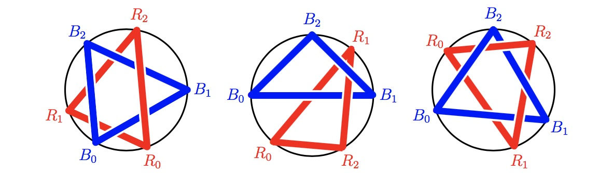

Given a circle $C$ and an integer $n > 1$, we perform the following operations.
In step $0$, we choose two uniformly random points $R_0$ and $B_0$ on $C$.
In step $i$ ($1 \leq i < n$), we first choose a uniformly random point $R_i$ on $C$ and connect the points $R_{i - 1}$ and $R_i$ with a red rope; then choose a uniformly random point $B_i$ on $C$ and connect the points $B_{i - 1}$ and $B_i$ with a blue rope.
In step $n$, we first connect the points $R_{n - 1}$ and $R_0$ with a red rope; then connect the points $B_{n - 1}$ and $B_0$ with a blue rope.
Each rope is straight between its two end points, and lies above all previous ropes.
After step $n$, we get a loop of red ropes, and a loop of blue ropes.
Sometimes the two loops can be separated, as in the left figure below; sometimes they are "linked", hence cannot be separated, as in the middle and right figures below.

Let $P(n)$ be the probability that the two loops can be separated.
For example, $P(3) = \frac{11}{20}$ and $P(5) \approx 0.4304177690$.
Find $P(80)$, rounded to $10$ digits after decimal point.
solve(n=3) → ?solve(n=80) → ?solve(n=100) → ?